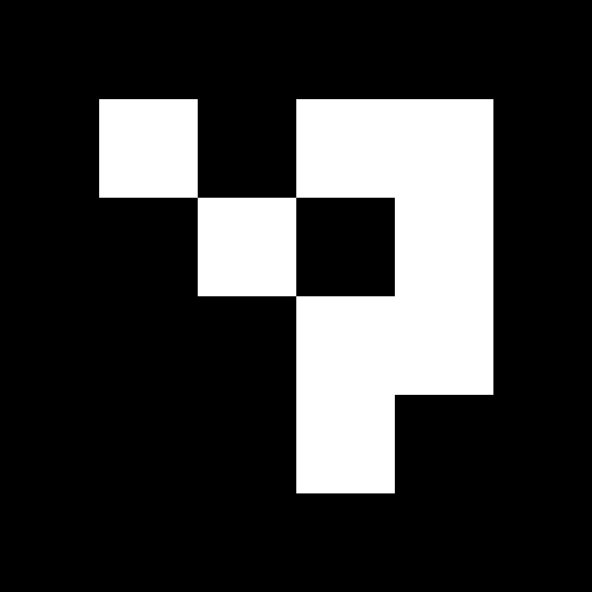

측정 테스트 카드 인쇄
아래 카드를 인쇄하세요. 반드시 "실제 크기"로 인쇄해야 합니다 (배율 100%, 페이지에 맞춤 X).
인쇄 설정 확인:
- 배율: 100% (실제 크기)
- "페이지에 맞춤" 체크 해제
- 인쇄 후 실제 자로 확인: 카드 가로 = 90mm, 세로 = 50mm
- QR코드 = 44mm, ArUco 마커 = 44mm 여야 합니다
ArUco 마커 카드 (44mm)

ArUco ID:0 44mm | FishingGo Test